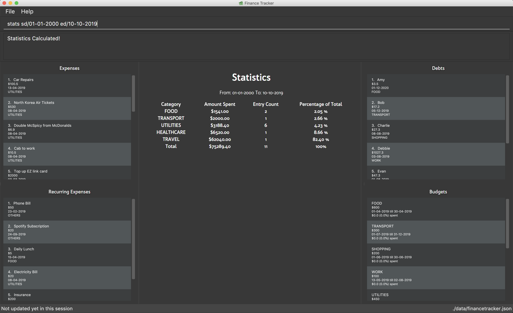

By: CS2103-AY1819S2-W15-2 Since: Feb 2019
- 1. Introduction
- 2. Quick Start
- 3. Features
- 4. Commands
- 4.1. Viewing help :
help - 4.2. Listing expenses :
listexpense - 4.3. Adding an expense:
addexpense - 4.4. Editing an expense :
editexpense - 4.5. Deleting an expense :
deleteexpense - 4.6. Adding a budget :
addbudget - 4.7. Editing a budget:
editbudget - 4.8. Deleting a budget:
deletebudget - 4.9. Listing debts:
listdebt - 4.10. Adding a debt:
adddebt - 4.11. Editing a debt:
editdebt - 4.12. Deleting a debt:
deletedebt - 4.13. Paying off a debt:
paydebt - 4.14. Adding a recurring:
addrecurring - 4.15. Editing a recurring :
editrecurring - 4.16. Deleting a recurring:
deleterecurring - 4.17. Viewing Statistics - Summary:
stats - 4.18. Viewing Statistics - Trend:
statstrend - 4.19. Viewing Statistics - Compare:
statscompare - 4.20. Listing entered commands :
history - 4.21. Undoing previous command :
undo - 4.22. Redoing the previously undone command :
redo - 4.23. Clearing all entries :
clear - 4.24. Exiting the program :
exit - 4.25. Saving the data
- 4.26. Email reminders
[coming in v2.0]
- 4.1. Viewing help :
- 5. FAQ
- 6. Command Summary
1. Introduction
Personal Finance Tracker is for those who prefer to use a desktop app for expense tracking. More importantly, Personal Finance Tracker is optimized for those who prefer to work with a Command Line Interface (CLI) while still having the benefits of a Graphical User Interface (GUI). Whether if you are an expert user or a non tech savvy user, we have commands that cater towards you guys!Interested? Jump to the Section 2, “Quick Start” to get started. Enjoy!
2. Quick Start
-
Ensure you have Java version
9or later installed in your Computer. -
Download the latest
main.jarhere. -
Copy the file to the folder you want to use as the home folder for your Personal Finance Tracker.
-
Double-click the file to start the app. The GUI should appear in a few seconds.
 -
Type the command in the command box and press Enter to execute it.
e.g. typinghelpand pressing Enter will open the help window. -
Some example commands you can try:
-
listv/all: lists all contacts -
addn/Sofa $/200 c/HOME: adds an expense namedSofaof amount$200and category ofHOMEto the Finance Tracker. -
delete3: deletes the 3rd expense shown in the current list -
exit: exits the app
-
-
Refer to Section 4, “Commands” for details of each command.
3. Features
3.1. Expense
Want to start tracking your expenses but don’t know what application to use?
Fret not, our Finance Tracker allows you to track your expenses by adding it into our system.
You can even categorise your expenses in terms of food, travel, transport and more!
3.2. Budget
Trying to save up for that upcoming trip?
The Budget feature helps you stay within your desired level of expenses within a specified time period!
You can even set budgets for specific categories to better manage your expenses!
3.3. Debt
Always losing track of payments due, personal loans or debts owed?
With the Debt feature, you’ll never forget your payments due ever again!
The Debt feature helps you to make expenses in advance and helps you keep track of these expenses due.
3.4. Recurring
Want to keep track of monthly bills in the expense tracker as well?
The Recurring feature simplifies the process of adding periodic expenses such as phone bills or Netflix subscriptions.
Instead of manually adding the same expense repetitively, just add a Recurring and the Finance Tracker will automatically
add the expense for you periodically at your specified frequency and for your specified duration!
The Recurring feature also simplifies the deletion and editing of these recurring expenses!
3.5. Stats
Want to see trends and statistics of your expenses?
The Stats feature allows you to view a variety of statistics based on the expenses you’ve input into the Finance Tracker.
These statistics will help you better understand your expenses and make effective changes to your habits if so desired.
4. Commands
Command Format
-
Words in
UPPER_CASEare the parameters to be supplied by the user e.g. inadd n/NAME,NAMEis a parameter which can be used asadd n/Hamburger. -
Items in square brackets are optional e.g
n/NAME [t/TAG]can be used asn/Hamburger t/lunchor asn/Hamburger. -
Items with
… after them can be used multiple times including zero times e.g.[t/TAG]…can be used ast/lunch,t/lunch t/happy houretc. -
Parameters can be in any order e.g. if the command specifies
n/NAME $/AMOUNT c/CATEGORY,$/AMOUNT c/CATEGORY n/NAMEis also acceptable. -
We take into account non-tech savvy users and offer alternative command format that prompts users to add parameters step by step.
e.g. When adding an expense, instead of inputting an entire line of command such asadd n/NAME $/AMOUNT c/CATEGORY [d/DATE] [r/REMARK](Format 1), we also allow user to type in commandaddand prompts the user to input each parameter one by one. (Format 2).
4.1. Viewing help : help
Format: help
4.2. Listing expenses : listexpense
Shows a list of expenses in the finance tracker according to the view specified.
Format: listexpense v/VIEW
Shortcut: le v/VIEW
-
The VIEW specifies how the list of expenses are displayed.
-
v/all: displays entire list of expenses
-
v/day: displays list of expenses added since a day ago
-
v/month: displays list of expenses added since a month ago
-
v/year: displays list of expenses added since a year ago
-
v/CATEGORY: displays list of expenses with CATEGORY
-
4.3. Adding an expense: addexpense
Adds an expense to the finance tracker.
Format 1: addexpense n/NAME $/AMOUNT c/CATEGORY [d/DATE] [r/REMARK]
Shortcut: ae n/NAME $/AMOUNT c/CATEGORY [d/DATE] [r/REMARK]
-
The NAME should only contain alphanumeric characters and spaces, and it should not be blank.
-
The AMOUNT should only contain numbers, reflect the value in dollars and it should be at least 1 digit long.
-
The CATEGORY is case insensitive and should only be one of the following: FOOD, TRANSPORT, SHOPPING, WORK, UTILITIES, HEALTHCARE, ENTERTAINMENT, TRAVEL, OTHERS.
-
The DATE should be in dd-mm-yyyy format.
-
If DATE is omitted, current date will be used.
-
If REMARK is omitted, no remarks will be stored.
| You can omit [optional] parameters by leaving them empty. |
Examples:
-
addexpense n/BKT $/3.00 c/food d/13-01-1996 r/My weekly bak kut teh intake. -
ae n/Sofa $/200 c/HOME
Format 2: addexpense
Shortcut: ae
Examples:
-
addexpense
Please enter the name of the expense: BKT
Please enter the amount of the expense: 3.00
Please enter the category of the expense: food
Please enter the date of the expense (optional):
Please enter the remark of the expense (optional):
4.4. Editing an expense : editexpense
Edits an existing expense in the finance tracker.
Format 1: editexpense INDEX [n/NAME] [$/AMOUNT] [c/CATEGORY] [d/DATE] [r/REMARK]
Shortcut: ee INDEX [n/NAME] [$/AMOUNT] [c/CATEGORY] [d/DATE] [r/REMARK]
-
Edits the expense at the specified
INDEX. -
The index refers to the index number shown in the displayed expense list. The index must be a positive integer.
-
At least one of the optional fields must be provided.
-
Existing values will be updated to the input values.
| You can omit [optional] parameters by leaving them empty. If all parameters are empty, no edits will occur. |
Examples:
-
editexpense 9 $/450 c/food
Edits the amount and category of the 9th expense to be450andfoodrespectively.
Format 2: editexpense INDEX
Shortcut: ee INDEX
Examples:
editexpense 9
Please enter the name of the expense to be updated (optional):
Please enter the amount of the expense to be updated (optional): 450
Please enter the category of the expense to be updated (optional): food
Please enter the date of the expense to be updated (optional):
Please enter the remark of the expense to be updated (optional):
4.5. Deleting an expense : deleteexpense
Deletes the specified expense from the finance tracker.
Format: deleteexpense INDEX
Shortcut: de INDEX
-
Deletes the expense at the specified
INDEX. -
The index refers to the index number shown in the displayed expense list. The index must be a positive integer.
Examples:
-
list
deleteexpense 2
Deletes the 2nd expense in the finance tracker.
4.6. Adding a budget : addbudget
Adds a budget with a time frame to the tracker.
Format 1: addbudget $/AMOUNT c/CATEGORY [sd/START_DATE] ed/END_DATE [r/REMARKS]
Shortcut: ab $/AMOUNT c/CATEGORY [sd/START_DATE] ed/END_DATE [r/REMARKS]
-
The categories include: “food”, “shopping”, “work”, “transport”, “utilities”, “healthcare”, “entertainment” and “others” which are case insensitive.
-
The program only limits one budget for each category.
-
START_DATE and END_DATE must be in dd-mm-yyyy format.
-
If START_DATE is omitted, current date will be used.
Examples:
-
addbudget c/food $/400 sd/1-2-2019 ed/28-2-2019 -
ab c/others $/12000 sd/1-1-2019 ed/31-12-2019
Format 2: addbudget
Shortcut: ab
Examples:
-
addbudget
Please enter the category of the budget: food
Please enter the amount of the budget: 400
Please enter the start date of budget: 01-2-2019
Please enter the end date of budget: 28-2-2019
4.7. Editing a budget: editbudget
Edits a budget in the finance tracker.
Format 1: editbudget c/CATEGORY [$/AMOUNT] [sd/NEW_START_DATE] [ed/NEW_END_DATE]
Shortcut: eb c/CATEGORY [$/AMOUNT] [sd/NEW_START_DATE] [ed/NEW_END_DATE]
|
Examples:
* editbudget c/shopping ed/31-3-2019
* eb c/others $/5000 sd/1-1-2019 ed/31-3-2019
Format 2: editbudget
Shortcut: eb
Examples:
editbudget
Please enter the category of the budget to be updated: food
Please enter the amount of the budget to be updated (optional):
Please enter the start date of budget to be updated (optional):
Please enter the end date of budget to be updated (optional):
4.8. Deleting a budget: deletebudget
Deletes a budget from the finance tracker.
-
Deletes the budget of the specified
CATEGORY.
Format: deletebudget c/CATEGORY
Shortcut: db c/CATEGORY
Examples:
-
deletebudget c/food
4.9. Listing debts: listdebt
Shows a list of debts in the finance tracker according to the view specified.
Format: listdebt [v/VIEW]
Shortcut: ld [v/VIEW]
-
If VIEW is omitted, all debts are listed.
-
The VIEW specifies how the list of debts is displayed.
-
v/DEADLINE: display list of debts showing nearest DEADLINE first. Debts without deadlines will be at the bottom of the list.
-
v/CATEGORY: displays list of expenses with CATEGORY
-
4.10. Adding a debt: adddebt
Adds a debt to the finance tracker.
Format 1: adddebt n/PERSON_OWED $/AMOUNT_OWED c/CATEGORY due/DEADLINE [r/REMARK]
Shortcut: ad n/PERSON_OWED $/AMOUNT_OWED c/CATEGORY due/DEADLINE [r/REMARK]
-
The PERSON_OWED should only contain alphanumeric characters and spaces, and it should not be blank.
-
The AMOUNT_OWED should only contain numbers, reflect the value in dollars and it should be at least 1 digit long.
-
The CATEGORY is case insensitive and should only be one of the following: FOOD, TRANSPORT, SHOPPING, WORK, UTILITIES, HEALTHCARE, ENTERTAINMENT, TRAVEL, OTHERS.
-
The DEADLINE should be in dd-mm-yyyy format.
-
If REMARK is omitted, no remarks will be stored.
| You can omit (optional) parameters by leaving them empty. |
Examples:
-
adddebt n/John Doe $/50.00 c/shopping due/25-02-2019 r/Loan from John to finance my new earphones -
ad n/Jane Doe $/200 c/FOOD due/03-03-2019
Format 2: adddebt
Shortcut: ad
Examples:
-
adddebt
Please enter the name of the expense you owed: John Doe
Please enter the amount owed : 50.00
Please enter the category: shopping
Please enter the deadline of the debt: 25-02-2019
Please enter the remark of the debt (optional): Loan from John to finance my new earphones.
4.11. Editing a debt: editdebt
Edits an existing debt in the finance tracker.
Format 1: editdebt INDEX [n/PERSON_OWED] [$/AMOUNT_OWED] [c/CATEGORY] [due/DEADLINE] [r/REMARK]
Shortcut: ed INDEX [n/PERSON_OWED] [$/AMOUNT_OWED] [c/CATEGORY] [due/DEADLINE] [r/REMARK]
-
Edits the debt at the specified
INDEX. -
The index refers to the index number shown in the displayed expense list. The index must be a positive integer.
-
At least one of the optional fields must be provided.
-
Existing values will be updated to the input values.
| You can omit [optional] parameters by leaving them empty. If all parameters are empty, no edits will occur. |
Examples:
-
editdebt 5 n/Tommy $/60Edits expense owed and amount owed of the 5th debt to beTommyand$60respectively.
Format 2: editdebt
Shortcut: ed
Examples:
-
editdebt 5
Please enter the updated name of the debt you owed (optional): Tommy
Please enter the updated amount owed (optional): 60.00
Please enter the updated category (optional):
Please enter the updated deadline of the debt (optional):
Please enter the updated remark of the debt (optional):
4.12. Deleting a debt: deletedebt
Deletes the specified debt from the finance tracker.
Format: deletedebt INDEX
Shortcut: dd INDEX
-
Deletes the debt at the specified
INDEX. -
The index refers to the index number shown in the displayed expense list. The index must be a positive integer.
Examples:
-
listdebt
deletedebt 5
Deletes the 5th debt in the finance tracker.
4.13. Paying off a debt: paydebt
Converts the specified debt into an expense.
Format: paydebt INDEX [d/DATE]
Shortcut: pd INDEX [d/DATE]
-
Converts the debt at the specified
INDEX. -
The index refers to the index number shown in the displayed expense list. The index must be a positive integer.
-
After converting the debt into an expense, the debt is deleted.
-
The following parameters from debt will be carried over to expense:
-
The NAME will be entered as “Debt to PERSON_OWED”.
-
The AMOUNT will be entered as “AMOUNT_OWED”.
-
The CATEGORY will carry over as indicated in the debt.
-
The REMARKS will carry over as indicated in the debt.
-
-
The DATE should be in dd-mm-yyyy format and can be used to indicate actual day when user paid off the debt.
-
If DATE is omitted, current date will be used.
Examples:
-
listdebt
paydebt 3
Converts the 3rd debt in the finance tracker into an expense.
4.14. Adding a recurring: addrecurring
Adds a recurring payment to the finance tracker.
Format 1: addrecurring n/NAME $/AMOUNT c/CATEGORY [d/START_DATE] [r/REMARK] f/FREQUENCY o/OCCURRENCE
Shortcut: ar n/NAME $/AMOUNT c/CATEGORY [d/START_DATE] [r/REMARK] f/FREQUENCY o/OCCURRENCE
-
The NAME should only contain alphanumeric characters and spaces, and it should not be blank.
-
The AMOUNT should only contain numbers, reflect the value in dollars and it should be at least 1 digit long.
-
The CATEGORY is case insensitive and should only be one of the following: FOOD, TRANSPORT, SHOPPING, WORK, UTILITIES, HEALTHCARE, ENTERTAINMENT, TRAVEL, OTHERS.
-
The START_DATE should be in dd-mm-yyyy format.
-
If START_DATE is omitted, current date will be used.
-
If REMARK is omitted, no remarks will be stored.
-
The FREQUENCY should consists of D, W, M, Y for daily, weekly, monthly and yearly respectively.
-
The OCCURRENCE should be a number from 1 to 999 inclusive.
| You can omit (optional) parameters by leaving them empty. |
Examples:
-
`addrecurring n/Phone Bill $/50.00 c/utilities d/23-2-2019 r/Signed a new 2 year contract. f/M o/24 `
-
addrecurring n/Magazine Subscription $/20 c/utilities f/M o/12
Format 2: addrecurring
Shortcut: ar
Examples:
-
addrecurring
Please enter the name of the recurring: Magazine Subscription
Please enter the amount of the recurring: 20
Please enter the category of the recurring: utilities
Please enter the start date of the recurring (optional):
Please enter the remark of the expense (optional):
Please enter the frequency of the recurring: M
Please enter the number of occurrence of the recurring: 12
4.15. Editing a recurring : editrecurring
Edits an existing recurring in the finance tracker.
Format 1: editrecurring INDEX [p/EDITPASTOPTION] [n/NAME] [$/AMOUNT] [c/CATEGORY] [d/STARTDATE] [r/REMARK] [f/FREQUENCY] [o/OCCURRENCE]
Shortcut: er INDEX [p/EDITPASTOPTION] [n/NAME] [$/AMOUNT] [c/CATEGORY] [d/STARTDATE] [r/REMARK] [f/FREQUENCY] [o/OCCURRENCE]
-
Edits the recurring at the specified
INDEX. -
The index refers to the index number shown in the displayed recurring list. The index must be a positive integer.
-
At least one of the optional fields must be provided.
-
EDITPASTOPTION should only be 'Y' or 'N'. This prompts user if expenses previously added by this recurring should be edited to reflect the new changes.
-
Agreeing (Y) will edit the recurring, such that new expenses made by this recurring from this time on will reflect the new changes, while also changing old expenses already added by this recurring.
-
Disagreeing (N) will edit the recurring, such that new expenses made by this recurring from this time on will reflect the new changes, while old expenses already added by this recurring will not be changed.
-
-
If EDITPASTOPTION is omitted, it defaults to N.
-
Existing values will be updated to the input values.
| You can omit (optional) parameters by leaving them empty. If all parameters are empty, no edits will occur. |
Examples:
-
editrecurring 9 p/N $/450 c/food
Edits the amount and category of the 9th recurring to be450andfoodrespectively. No changes will be made to old expenses already added by this recurring.
Format 2: editrecurring INDEX
Shortcut: er INDEX
Examples:
editrecurring 9
Do you wish to edit previous expenses added by this recurring?:
Please enter the name of the recurring to be updated (optional):
Please enter the amount of the recurring to be updated (optional): 450
Please enter the category of the recurring to be updated (optional): food
Please enter the frequency of the recurring to be updated (optional):
Please enter the number of occurrence of the recurring to be updated (optional):
Please enter the start date of the recurring to be updated (optional):
Please enter the remark of the expense to be updated (optional):
4.16. Deleting a recurring: deleterecurring
Deletes the specified recurring from the finance tracker.
Format: deleterecurring INDEX [p/DELETEPASTOPTION]
Shortcut: dr INDEX [p/DELETEPASTOPTION]
-
Deletes the recurring at the specified
INDEX. -
The index refers to the index number shown in the displayed recurring list. The index must be a positive integer.
-
At least one of the optional fields must be provided.
-
The DELETEPASTOPTION should only be 'Y' or 'N'. This prompts user if expenses previously added by this recurring should be deleted.
-
Agreeing (Y) will delete the recurring, and delete all old expenses already added by this recurring.
-
Disagreeing (N) will delete the recurring, but does not delete old expenses already added by this recurring.
-
-
If DELETEPASTOPTION is omitted, it defaults to N.
| You can omit (optional) parameters by leaving them empty. If all parameters are empty, no edits will occur. |
Examples:
-
listrecurring
deleterecurring 2 p/N
Deletes the 2nd recurring in the finance tracker, without deleting old expenses already added by this recurring.
4.17. Viewing Statistics - Summary: stats
Produces statistics regarding the user’s finance.
The statistics include the frequency of entries, the total amount of money spent
The user may choose the time frame to be considered for the statistic by entering the start date and end date.
The user may also choose to display only the results in a specific category.
The user may also choose the way he wants the information expressed. Options: Pie Chart, Bar Chart, Table.
Table Example:
Category |
Total Amount |
Entries |
FOOD |
$302 |
38 |
TRANSPORT |
$205 |
4 |
SHOPPING |
$1702 |
8 |
WORK |
$52 |
1 |
OTHERS |
$40 |
1 |
Format:
stats [vr/VISUAL_REPRESENTATION] [sd/START_DATE] [ed/END_DATE] [c/CATEGORY]
|
Examples:
-
stats -
stats vr/pie -
stats sd/12-02-2018 -
stats sd/01-01-2019 ed/01-02-2019 vr/bar c/food
4.18. Viewing Statistics - Trend: statstrend
Produces statistics regarding the user’s finance over a period of time to show trends.
The statistics include the total amount of money spent on different categories and the frequency of entries in those categories.
The user must choose the time frame to be considered for the statistic by entering the start date and end date.
The user may also choose to display only the results in a specific category.
The user may also choose the way he wants the information expressed. Options: Pie Chart, Bar Chart, Table.
Table Example:
Month starting: |
01-01-2019 |
01-02-2019 |
01-03-2019 |
FOOD |
A:$302, E:38 |
A:$23, E:1 |
A:$782, E:64 |
TRANSPORT |
A:$123, E:2 |
A:$0, E:0 |
A:$140, E:2 |
SHOPPING |
A:$324, E:1 |
A:$0, E:0 |
A:$200, E:1 |
WORK |
A:$0, E:0 |
A:$401, E:2 |
A:$0, E:0 |
TOTAL |
A:$749, E:41 |
A:$424, E:3 |
A:$1122, E:67 |
Format: statstrend sd/START_DATE ed/END_DATE p/PERIOD [vr/VISUAL_REPRESENTATION] [c/CATEGORY]
|
If VISUAL_REPRESENTATION field is left empty, vr options will be displayed. |
Examples:
-
statstrend sd/01-01-2018 ed/01-01-2018 p/month -
statstrend sd/01-01-2018 ed/01-01-2018 p/14 -
statstrend sd/01-01-2018 ed/01-01-2018 p/month vr/line c/food
4.19. Viewing Statistics - Compare: statscompare
Produces and displays statistics regarding the user’s finance for 2 to 4 time periods.
The statistics include the total amount of money spent on different categories and the frequency of entries in those categories.
The user must specify at least 2 and not more than 4 time periods by specifying the starting dates and the desired period length.
The user may also choose to display only the results in a specific category.
The user may also choose the way he wants the information expressed. Options: Pie Chart, Bar Chart, Table.
Table Example:
Fortnight starting: |
01-01-2019 |
02-01-2019 |
01-03-2019 |
13-03-2019 |
FOOD |
A:$302, E:38 |
A:$23, E:1 |
A:$782, E:64 |
A:$23, E:5 |
TRANSPORT |
A:$123, E:2 |
A:$0, E:0 |
A:$140, E:2 |
A:$0, E:0 |
SHOPPING |
A:$324, E:1 |
A:$0, E:0 |
A:$200, E:1 |
A:$0, E:0 |
WORK |
A:$0, E:0 |
A:$401, E:2 |
A:$0, E:0 |
A:$0, E:0 |
TOTAL |
A:$749, E:41 |
A:$424, E:3 |
A:$1122, E:67 |
A:$23, E:5 |
Format: statscompare d1/DATE_1 d2/DATE_2 [d#/DATE#] p/PERIOD [vr/VISUAL_REPRESENTATION] [c/CATEGORY]
|
If VISUAL_REPRESENTATION field is left empty, vr options will be displayed |
Examples:
-
statscompare d1/01-01-2019 d2/01-02-2019 p/month -
statscompare d1/01-01-2019 d2/07-01-2019 d3/07-01-2019 d4/13-02-2019 p/7 -
statscompare d1/01-01-2018 d2/01-01-2018 p/month vr/pie c/food
4.20. Listing entered commands : history
Lists all the commands that you have entered, along with its index, in reverse chronological order.
Format: history
|
Pressing the ↑ and ↓ arrows will display the previous and next input respectively in the command box. |
4.21. Undoing previous command : undo
Restores the finance tracker to the state before the previous undoable command was executed.
Format: undo
|
Undoable commands: those commands that modify the finance tracker’s content ( |
Examples:
-
delete 1
list
undo(reverses thedelete 1command) -
select 1
list
undo
Theundocommand fails as there are no undoable commands executed previously. -
delete 1
clear
undo(reverses theclearcommand)
undo(reverses thedelete 1command)
4.22. Redoing the previously undone command : redo
Reverses the most recent undo command.
Format: redo
Examples:
-
delete 1
undo(reverses thedelete 1command)
redo(reapplies thedelete 1command) -
delete 1
redo
Theredocommand fails as there are noundocommands executed previously. -
delete 1
clear
undo(reverses theclearcommand)
undo(reverses thedelete 1command)
redo(reapplies thedelete 1command)
redo(reapplies theclearcommand)
4.23. Clearing all entries : clear
Clears all entries from the finance tracker.
Format: clear
4.24. Exiting the program : exit
Exits the program.
Format: exit
4.25. Saving the data
Finance tracker data are saved in the hard disk automatically after any command that changes the data.
There is no need to save manually.
4.26. Email reminders [coming in v2.0]
{Sends an email if the expenses are about to exceed the budget or when debts are due.}
5. FAQ
Q: How do I transfer my data to another Computer?
A: Install the app in the other computer and overwrite the empty data file it creates with the file that contains the data of your previous Financial Tracker folder.
6. Command Summary
-
Help :
help -
History :
history -
Undo :
undo -
Redo :
redo -
List expenses :
listexpense -
Add an expense
addexpense n/NAME $/AMOUNT c/CATEGORY [d/DATE] [r/REMARK]
e.g.addexpense n/BKT $/3.00 c/food d/13-01-1996 r/My weekly bak kut teh intake -
Edit an expense :
editexpense INDEX [n/NAME] [$/AMOUNT] [c/CATEGORY] [d/DATE] [r/REMARK]
e.g.editexpense 2 n/Bak Kut Teh -
Delete an expense :
deleteexpense INDEX
e.g.deleteexpense 3 -
Clear expenses :
clearexpense -
Add a budget :
addbudget $/AMOUNT c/CATEGORY [sd/START_DATE] ed/END_DATE [r/REMARKS]
e.g.addbudget c/food $/400 sd/1-2-2019 ed/28-2-2019 -
Edit a budget :
editbudget c/CATEGORY [$/AMOUNT] [sd/NEW_START_DATE] [ed/NEW_END_DATE] [r/REMARKS]
e.g.editbudget c/others $/5000 sd/1-1-2019 ed/31-3-2019 -
Delete a budget :
deletebudget c/CATEGORY
e.g.deletebudget c/food -
List debts :
listdebt [v/VIEW] -
Add a debt :
adddebt n/PERSON_OWED $/AMOUNT_OWED c/CATEGORY [due/DEADLINE] [r/REMARK]
e.g.adddebt n/Jane Doe $/200 c/FOOD -
Edit a debt :
editdebt INDEX [n/PERSON_OWED] [$/AMOUNT_OWED] [c/CATEGORY] [due/DEADLINE] [r/REMARK]
e.g.editdebt 5 n/Tommy $/60 -
Delete a debt :
deletedebt INDEX
e.g.deletedebt 5 -
Pay off debt :
paydebt INDEX [d/DATE]
e.g.payDebt 2 -
Add a recurring :
addrecurring n/NAME $/AMOUNT c/CATEGORY [d/STARTDATE] [r/REMARK] [f/FREQUENCY] [o/OCCURRENCE]
e.g.addrecurring n/Phone Bill $/50.00 c/utilities d/23-2-2019 r/Signed a new 2 year contract. f/M o/24 -
Edit a recurring :
editrecurring INDEX [p/EDITPASTOPTION] [n/NAME] [$/AMOUNT] [c/CATEGORY] [d/STARTDATE] [r/REMARK] [f/FREQUENCY] [o/OCCURRENCE]
e.g.editrecurring 9 p/N $/450 c/food -
Delete a recurring :
deleterecurring INDEX [p/DELETEPASTOPTION]
e.g.deleterecurring 2 p/N -
Viewing statistics :
stats [m/MODE] [vr/VISUAL_REPRESENTATION] [sd/START_DATE] [ed/END_DATE] [c/CATEGORY]
e.g.stats c/frequency sd/01-01-2019 ed/01-02-2019 vr/bar c/food -
Viewing Macro Statistic Trend :
stats_mt sd/START_DATE ed/END_DATE p/PERIOD [vr/VISUAL_REPRESENTATION] [c/CATEGORY]
e.g.stats_mt sd/01-01-2018 ed/01-01-2018 p/month vr/line c/food -
Viewing Macro Statistic Comparison :
stats_mc d1/DATE_1 d2/DATE_2 [d#/DATE#] p/PERIOD [vr/VISUAL_REPRESENTATION] [c/CATEGORY]
e.g.stats_mc d1/01-01-2018 d2/01-01-2018 p/month vr/pie c/food